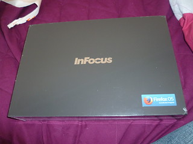
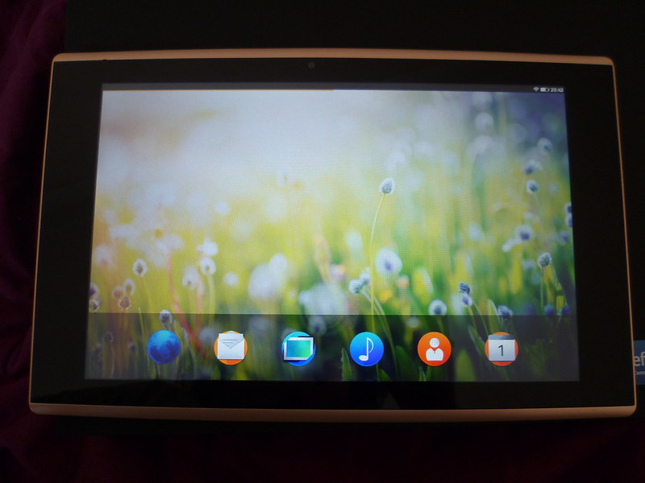

6 août 2014
Test de la tablette InFocus sur Firefox OS

Ça y est, j'ai enfin reçu la tablette développeur InFocus « New Tab », aussi appelée « F1 » ou « flatfish » son nom de code chez Mozilla. Cette tablette est fabriquée par Foxconn et distribuée pour les développeurs via le programme TCP (Tablet Contribution Program) de Mozilla. Voici ses caractéristiques :- Marque/Modèle : Foxconn InFocus ;
- Processeur : A31 (ARM Cortex A7) Quad-Core 1.2GHz w/ PowerVR SGX544MP2 GPU ;
- RAM : 2 Go ;
- Capacité de stockage : 16Go ;
- Écran : 10.1" IPS capacitif multi-touch @ 1280x800 ;
- Appareil photo : 2MP avant /5MP arrière ;
- Wi-Fi : 802.11b/g/n ;
- Ports : Micro SD, Micro USB, casque (Jack) ;
- Autre : GPS/AGPS, Bluetooth, Gyroscope ;
- Batterie: 7000 mAh (non amovible).

La Foxconn InFocus est pourvue de trois boutons physiques que l'on retrouve sur tous les modèles Firefox OS : volume +/- et allumage. Il n'y a pas de bouton Home, celui-ci est remplacé par un mouvement de l'extérieur de l'écran vers l'écran avec un doigt. L'écran est, je trouve, de qualité très moyenne et ne remplis pas toute la surface de la tablette, mais le texte reste lisible à l'affichage. Le but n'étant pas de livrer un produit haut de gamme, mais un outil de test pour les développeurs. Côté utilisation, c'est acceptable, Firefox OS est en train d'être optimisé pour les tablettes tactiles et c'est le but du programme TCP. Un lanceur d'application est présent en bas de l'écran et les icônes et clavier sont affichés en plus gros. Les applications sont aussi adaptées comme par exemple les paramètres. D'autres applications ont encore besoin d'être améliorées comme le Marketplace qui s'affiche uniquement en portrait ou le Calendrier. Sur le Marketplace, il n'y a pas pour le moment de distinction tablette/smartphone pour Firefox OS (c'est le cas pour Firefox Android), on incite donc les développeurs à faire du « responsive design » au maximum sur leurs applications web. À noter, qu'une fois la tablette reçue, il est conseillé au plus vite d'activer le débogage adb ainsi que de flasher la nouvelle version du bootloader.En ce qui concerne le grand public, la première tablette qui sortira sous Firefox OS sera l'Alcatel OneTouch Fire 7. Elle a été présentée au Mobile World Congress en début d'année et sortira certainement en début d'année prochaine.
Commentaires 5